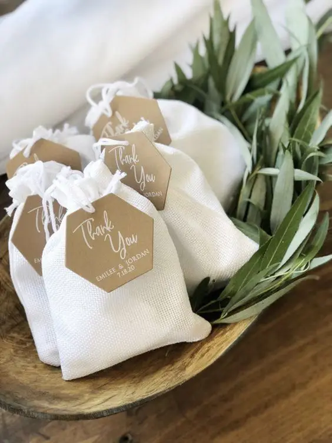
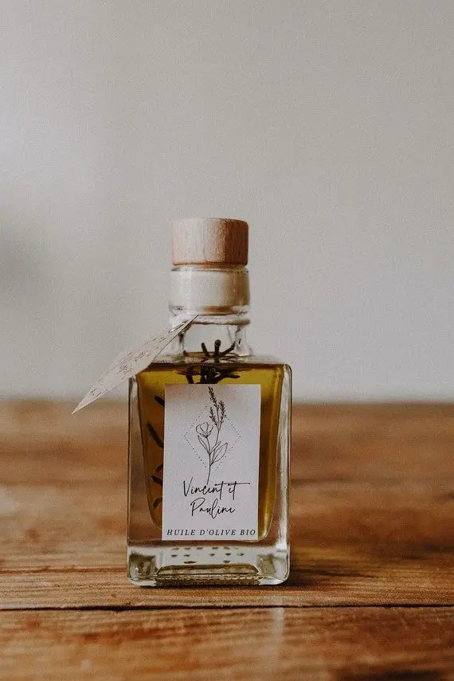
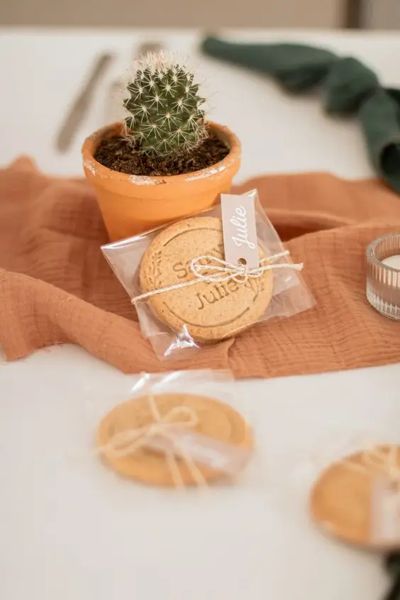
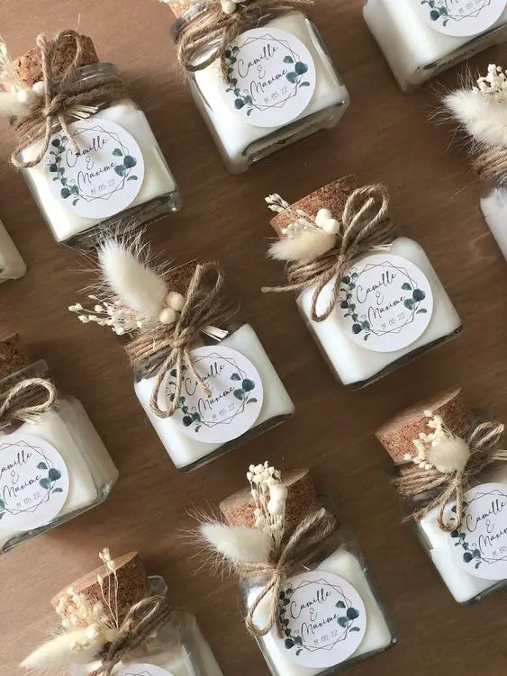
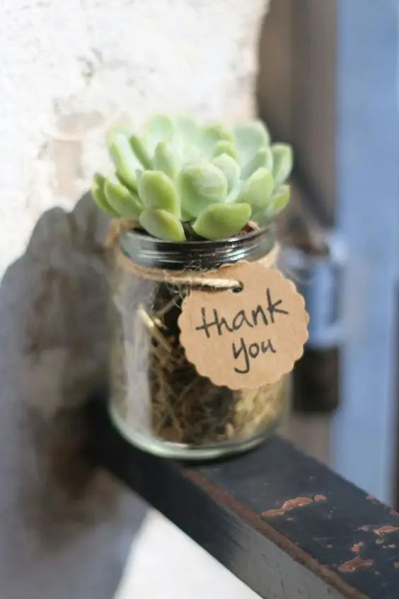
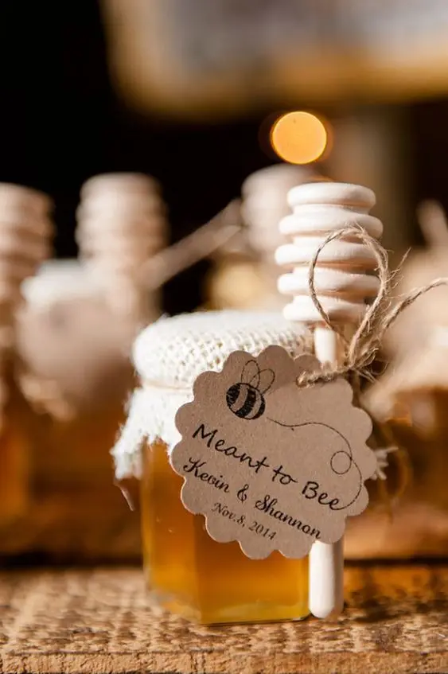
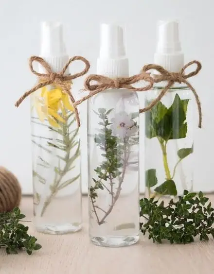
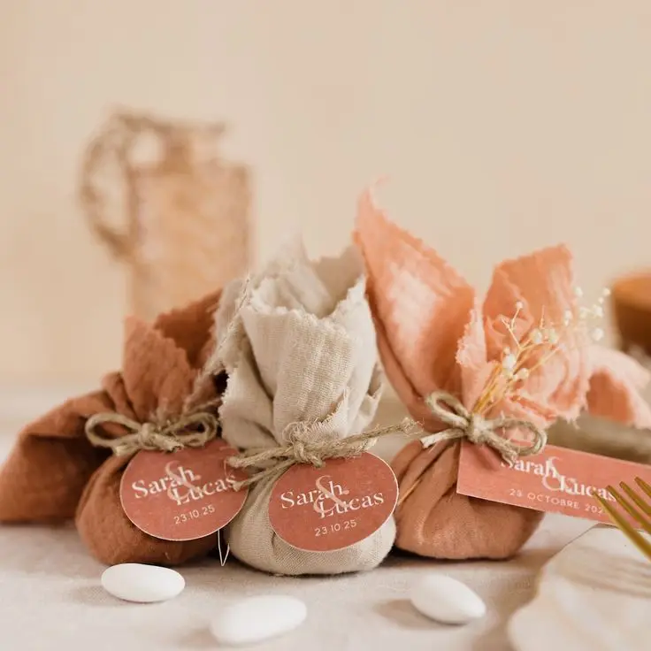

The big day is approaching, and wedding preparations often focus on the couple. Yet it is essential not to forget those who will share this special day with you: your guests. Offering wedding favours to the people attending this memorable celebration goes far beyond mere tradition; it is a warm, meaningful way to show your gratitude and create lasting memories.

Why give gifts to your guests?
Thanking your guests with a gift is a way of showing your appreciation for their presence by your side on this exceptional day. Some of your guests devote time and energy to helping you create the most beautiful day of your life. This small gift is a sincere way to express your gratitude while creating an atmosphere of sharing and mutual appreciation.
Wedding favours are also unique keepsakes of this unforgettable day. Carefully chosen and made, they are an ideal way to remind your guests of the precious moments you spent together and the joy you shared at your union.
Weddings are also usually a chance to bring family and friends together. Offering personalised gifts is therefore a lovely way to connect with your loved ones and tell them how much they mean to you.
Personalised keepsakes

A Mediterranean touch
A small glass vial of olive oil is sure to charm your guests. Add a little personalised label with your names or initials and the date of your unforgettable day to complete these adorable little bottles. These vials are a small attention that also symbolises peace and life.

A treat for food lovers
Out with traditional sugared almonds, in with personalised shortbread biscuits. Stamped with the classic "just married", or with your names or wedding date for something more original, these gifts guarantee your guests go home with a smile.

A scented gift
Scented candles are among those little presents that always please. The very symbol of romance, a candle is a timeless gift that will let your guests scent their home while remembering the day of your union.

A little greenery
Why not leave your guests a little touch of green? A small cactus is ideal for nature lovers. Inexpensive and easy to look after, these little plants make an excellent gift idea, because a bit of greenery at home never hurts.

A sweet treat
A symbol of sweetness, a small jar of honey is a poetic way to share your promises of love with your guests. Personalised with labels designed to your taste, this little sweet pleasure will delight your guests and their taste buds.

An essential gift
A vial of essential oil is a lovely way to combine the pleasure of receiving with wellbeing. Each plant has its own virtues and meaning, so you are free to choose the flower or plant that will give your gift sentimental value in your guests' eyes.
Sugared almonds with a twist!
Sugared almonds, traditionally made with sugar-coated almonds, have long symbolised abundance and fertility. Today these little sweets come in different shapes, colours and flavours to please everyone. This treat remains an essential classic, ensuring your guests take home a sweet memento of your wedding.

As a wedding planner and wedding designer based in the Bordeaux region, I specialise in services fully tailored to your needs and wishes. I am here to offer informed advice and put my tailor-made services to work, including the personalised design of guest favours, to make your day an unforgettable memory!
Lovely Day Event offers several services
Wedding planning
I step in at every stage of your preparations and guide you through your choices, bringing ideas and suggestions so that your wedding looks like no one but you.
Wedding design
Creative and passionate, I am a certified Wedding Designer and I create a scenographic atmosphere that matches the theme of your wedding.
On-the-day coordination
I will be the conductor of your day, managing the suppliers, the set-up of your decor and the smooth running of this beautiful day.